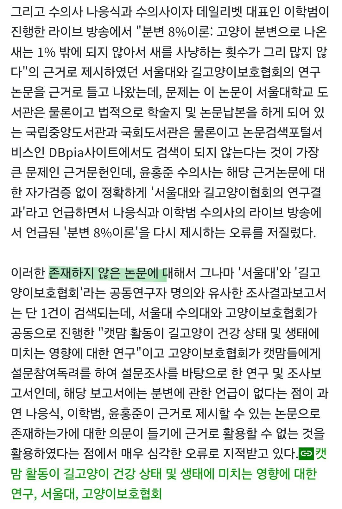
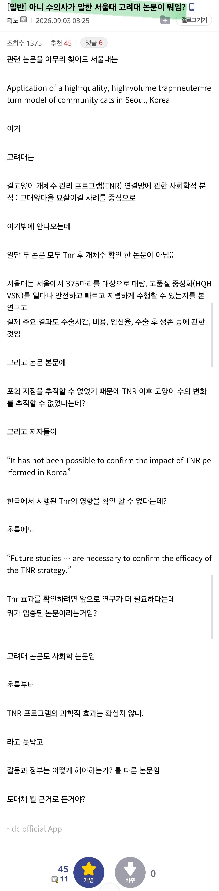

가짜논문 수준이 아니라 아예
세상에 "존재하지 않는 폰논문" 을 인용했다고 한다.
새릴레오는 도대체 무엇과 토론을 한 것인가?


가짜논문 수준이 아니라 아예
세상에 "존재하지 않는 폰논문" 을 인용했다고 한다.
새릴레오는 도대체 무엇과 토론을 한 것인가?
새덕후가 좀 토론스킬이 부족했던게 되게 뼈아팠지. 걍 현장에서 그거 검증 들어가자 했어야해서.
좀 잘 배우고 좀 머리는 식히고(감정적으로는 이해되지만 후속대처가 정말 정말 정말 아쉬움) 학술적 비판스킬 키우는게 중요할거 같음.
없는 사실로 논문 들이대면 누구라도 말 막힘
ㄴㄴ 오히려 그쪽 분야 사람이면 바로 캐치하는 부분이라... 교수님들이나 척척박사한테 그런 꼼수부리다가 ㄹㅇ 영혼까지 털림.
이게 대학원에서 그런거 캐치하는게 트레이닝되서 그런건데 아무래도 새덕후가 전문가지만 그런 거는 조금 경험이 적은게 너무 아쉽네.
새덕후가 말을 너무 못해서
진행이 1도 안된건데
결국 그래서 결론이 뭐임? 하면
양쪽 모두 국내 자료와 연구가
부족하다는 걸로 좁혀지는 걸로 보임
새덕후가 크게 잘못한 것은 본인도 자료 조사 다시 하면 3년 걸릴 거라봤는데
Tnr 효과없고 살처분이 답이라고
성급하게 주장했다는 것임
지금 상황 좋게 풀려도 3년 뒤에
자료 보고 다시 싸우자 해야한단 말임
댓글 왜
엔터 두번씩 치면서
쓰는거임
별 내용도 없으면서
보기 편하라고 쓰는 게
습관되서 그럼
시쓴줄알았음
너도 읽고 넘어간 거 보면
효과 좋잖아~
본문 글도 나처럼 쓴거고
캣맘들 신나서 이성적인 척 신나게 새덕후 까고 있던데 또 숲속친구들 되겠네
얼치기 환경운동가들이 가장 잘 활용하는 스킬이 "어디 논문" "어디 교수"임. 실제로 검증된 건 하나도 없는데 "뫄뫄대학교의 뫄뫄논문이 있는데 그 내용이 블라블라" 따위로 헛소리를 지껄이는거지. 글로 쓰면 인용에 대해 다 책임져야 하는데 입으로 떠들면 그러려니 하고 넘어가거든.
정신병자들 사이에선 정상인이 이상해보이지.
아까도 새덕후글에 캣맘빙의한 정신병자들 날뛰던데 ㅋㅋ
나는 첨부터 계속 말함. 수의사 논리자체가 오류가있다고.
그 자리에서 캐치해서 반박을 했다면, 살처분 관련 연구나 데이터가 부재해서 토론이 평행선을 달리다 끝났다면
이제와 수의사가 제시한 논문과 데아터자체가 허구라는게 드러났을 때
새덕후의 승리가 완성됐을텐데
방송에서 개발려버려서 말더듬이 새찍새 청년 이미지는 이미 확고하게 굳어버림.
새덕후는 이제 시즌 종료지 뭐
수의사가 제시한 TNR 실적 및 개체수 감소 그래프나 건물 충돌 수치 등은 국내 특정 시점이나 제한된 조건 통계 기반임.
그 데이터 자체가 장시간 모니터링 된 결과값이 아니라는거.
반면 길고양이가 야생 조류나 생태계에 미치는 영향에 대해서는 위와 같은 데이터조차 없음. 전무함.
조사 데이터가 없다는 것은 영향이 없다는 뜻이 아니라 영향의 규모를 파악조차 하지 못하고 있다는 뜻임.
수의사가 주장하는 것처럼 데이터가 없음을 이유로 생태계에 영향이 없다고 단정하거나
살처분 등 강력한 정책 필요성을 부정하는 것은 과학적 검증 부재를 정책적 안전으로 착각하는 논리적 오류임.
호주, 미국 등에선 고양이 사냥 활동이 야생 조류 및 소형 포유류 개체 수에 미치는 영향에 대한 광범위 축적 데이터가 존재함.
국내 생태계 통계가 부족하다는 점을 위와 같이 강조하고 나서, 해외 유효 데이터를 바탕으로 사전예방 원칙을 제시하며 국내 전수조사 및 기초연구가 시급하다고 주장하면 깔끔했을 듯.
전에 쓴 댓 복붙임
길가다 갑자기 방송국끌려간거 아닐거아냐.
토론회 준비를 하고 나갔을텐데 내가 폰으로 대출 끄적인 것보다 못하면 어떡함
캣맘 ㅂㅅ인거랑 상관없이 새덕후가 너무 안일했음
아님 저게 진짜 본인의 한계던가.
지성인이랑 토론할 줄 알고 준비했는데
없는논문 만들어내는 반지성주의자랑 토론할건 준비 못할 수 있지
가짜논문이라는 근거가 디시 글이랑 나무위키에서 나온 주장이라 영향력이 좀 없는 거 같네
학계 전문가의 언급이라도 있어야할 듯
권위에 호소하는건 논리적 오류임.
없는걸 없다고 하는데 있다고 주장할거면 그냥 논문 주소 딸깍하면 증명되잖음
논문이라는게 등재되기 위해 있는건데 검색해서 안나오면 끝이야 학계 전문가 의견이 왜필요함
분야 석사즘만 돼도 검색으로 확인 가능함
나도 알지.. 없는 걸 따로 증명할 필요가 없지
근데 언론에서 이걸 후속보도로 물 만한 껀덕지가 없으니 커뮤에서 이슈되고 끝날거야
이슈메이커가 될 유명 전문가가 "왜 토론에서 구라쳤음?" 하고 싸우자고 나오지 않는 이상 흐지부지 될 거임
근데 사실 수의사도 안 유명한 사람이잖아? 그냥 흐지부지 될 거 같다
아 그말이구나
그렇네 다시 떡밥이 수면위로 올라와야할텐데 언론이라던가
나응식 수의사계에선 쇼닥터 스타셰프 같은 위치임ㅋㅋ
근데 나응식아님
아 맞네ㅋㅋㅋ 팟케스트에서 같이 나왔단거네
새덕후가 걱정됨. 시간빌게이츠 정신병자들한테 공격당하면 아무리 무시하려해도 데미지 ㅈㄴ쌓일텐데
수의사들은 TNR로 돈버는 이해당사자들인데 전문가로 등장해서 토론하는게 맞아?
존재하지 않는 논문을 근거로 들고 온거부터거 결과를 정해놓은거고 속보이잖아
그렇다고 이해당사자를 배제할 수도 없어서
토론 요약
언변부족 vs 구라
중국 스파이가 조직적으로 캣맘 옹호 플젝을 해서 나라를 병들게 만드는 게 아닐까?
계집년들 업보인데 피해는 남자들이 보고 있는 상황ㅋㅋㅋㅋ
이 사실은 여초에서 개같이 흐린눈 당하고 무시당할 예정 ㅋㅋㅋㅋㅋ
이미 미션완료하고 여론 씹창냈는데 뭐 ㅋㅋㅋㅋㅋ
걍 말 너무 못하더라 부끄러움은 내몫인가
솔직히 고양이보다도 새똥으로 인한 피해가 더 클텐데
도심 조류도 다 살처분 하면 안 되냐?
그걸 새덕후가 그자리에서 말하셨어야지
폰논문 ㄷㄷㄷ
영상 잠깐 봤는데 댓글에선 말투나 목소리로 낙인찍고 패배 조롱하더라
제대로된 통계만 있으면 누가 맞는말하는지 각이 나오는 상황에서 통계논문을 주작치고 주장을 펼친거면, 그냥 애초에 나는 무적이다 치트키 쓰고 토론한거지 ㅋㅋ
현실은 토론 가타부타를 이제와서 지적하는 것보다 일단 결과적으로 바보이미지 만들고 영원히 돌리는 전략이 더센거 같음